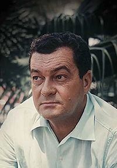

|
|
 |
| Şeker Portakalı | Jose Mauro De Vasconcelos |
Kitap Adı: Şeker Portakalı
Yazar: Jose Mauro De Vasconcelos
Çevirmen: Emrah İmre
Yazarlıkta karar kılıncaya kadar, boks antrenörlüğünden ressam ve heykeltıraşlara modellik yapmaya, muz plantasyonlarında hamallıktan gece kulüplerinde garsonluğa kadar çeşitli işlerde çalışan Jose Mauro de Vasconcelos’un başyapıtı Şeker Portakalı, *günün birinde acıyı keşfeden küçük bir çocuğun öyküsü*dür. Çok yoksul bir ailenin oğlu olarak dünyaya gelen, dokuz yaşında yüzme öğrenirken bir gün yüzme şampiyonu olmanın hayalini kuran Vasconcelos’un çocukluğundan derin izler taşıyan Şeker Portakalı, yaşamın beklenmedik değişimleri karşısında büyük sarsıntılar yaşayan küçük Zeze’nin başından geçenleri anlatır. Vasconcelos, tam on iki günde yazdığı bu romanı *yirmi yıldan fazla bir zaman yüreğinde taşıdığını* söyler.